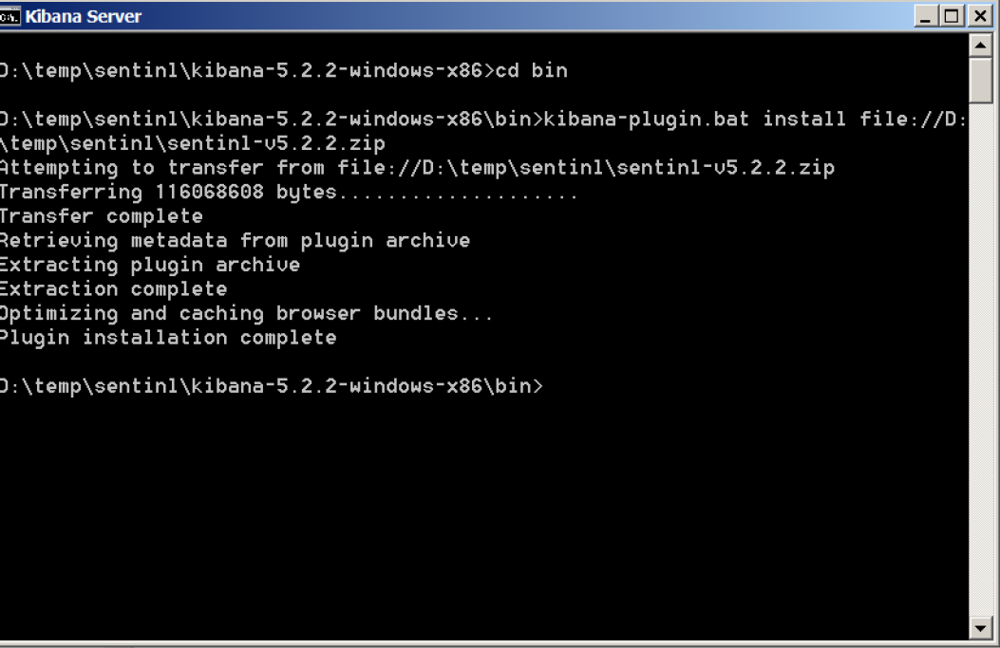
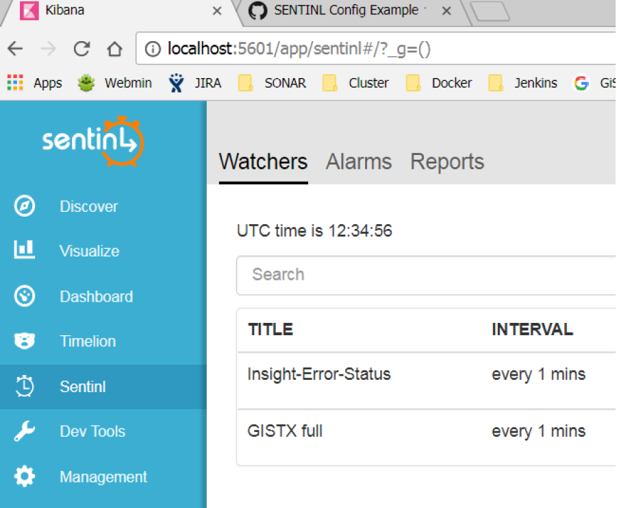

This manual describes the standard update of insight.
V2.3
Steps for Update to V2.3
Middleware
ElasticSearch
-
Stop service of ElasticSearch
-
Uninstall service of ElasticSearch elasticsearch\bin\service.bat remove
-
Save data folderbelow root of elasticsearch the folder contains all the indexed data of elasticsearch
-
After the installation of the new version of elasticsearch as written in chapter "Installation" and before starting it as a service please copy the saved data folder below the root of elasticsearch
Wildfly
-
Stop service of Wildfly8
-
Deinstall service of Wildfly8 wildfly\bin\service\service.bat uninstall
-
Save file wildfly\standalone\configuration\insight-indexer.properties
-
After the installation of the new version of wildfly as written in chapter "Installation" and before starting it as a service please edit new insight-indexer.properties and use the values from saved file.
Delete middleware
Delete current middleware folders
-
JRE
-
ElasticSearch
-
Wildfly
Install new Middleware
Install new middleware as described in chaper Installation
TreeConfigurations
The use of queryParams has changed in version v2.3:
Since V2.3 queryParams can be used for every node of a treeConfiguration and not only for the root node.
Therefore it is necessary to modify treeconfigurations using queryParams, i.e. "favoritenordner.json".
This can be done very easily. Just move the lines of "queryParams" into the section of node "root".
V2.5
Steps for Update to V2.5
V2.7
Steps for Update to V2.7
Wildfly Properties
In order to ease maintenance, configuration files of insight's wildfly-webapps have been consolidated.
Prior to 2.7 you had to create/edit a properties file for each webapp (insight-indexer.properties, insight-esproxy.properties etc).
Since 2.7 all webapps share the common insight.properties which is expected to be found in wildfly's configuration folder ( x:\GIS\wildlfy\standalone\configuration ).
Migration is quite simple: Merge all your insight-*.properties files into a new file insight.properties and eliminate duplicate entries.
insight-*.properties files are now obsolete and can be deleted.
Indexer's bulksize property must have been renamed. Please consult chapter Insight Properties to see, if you must update your settings.
backendInterna deprecated
The syntax which maps database relations to nodes changed.
The element "backendInterna" is now deprecated.
Its replaced by its content ("query"), but without the need to escape nested elements.
In order to ease migration, "backendInterna" is still supported in 2.7.
With 2.8 "backendInterna" will be disposed of permanently.
Please replace old structure with new one in all treeConfigurations in folder
Websphere\AppServer\profiles\ctgAppSrv01\treeConfigurations
Example:
From
"backendInterna": {
"query": "{ \"constraint\":\"(WOCLASS='WORKORDER') AND HISTORYFLAG=0 AND (STATUS='APPR' OR STATUS='INPRG') AND PARENT IS NULL\";, \"orderBy\": \"WONUM\"}"
},
To
"query": {
"constraint": "(WOCLASS='WORKORDER') AND HISTORYFLAG=0 AND (STATUS='APPR' OR STATUS='INPRG') AND PARENT IS NULL",
"orderBy": "WONUM"
},
new insightdb in standalone.xml
Wildfly needs an additional configuration for database insightdb analogous to reldb.
-
Stop Wildfly-Service
-
Edit \<wildfly\>\standalone\configuration\standalone.xml
-
Copy section \<datasource\> for reldb and replace in this new section reldb with insightdb
insight-userprofile
Copy
SMP\maximo\insight\configurations\insight-userprofile.json
to
WebSphere\AppServer\profiles\ctgAppSrv01\treeConfigurations
after unzipping insight-maximo-connector-2.7.2.zip
Maximo Logging
Maximo system parameter mxe.webclient.logging.CorrelationEnabled should be set to false , to reduce unnecessary logging especially to avoid logging "recentchanges" calls of insight-indexer every single second and to avoid logging of user-credentials.
V2.8
Steps for Update to V2.8
Upgrade middleware
-
stop Wildfly-Process and remove Wildfly-Service wildfly\bin\service\service.bat uninstall
-
stop Kibana-Process \kibana\bin\service.bat uninstall and remove Kibana-Service kibana\bin\service.bat uninstall
-
stop Elastic-Process and remove Elastic-Service elasticsearch\bin\service.bat remove
-
rename "insight"-folder to "insight-save"
-
extract middleware.zip in new and empty folder insight
-
-- obsolete
elastic data migration
copy folder nodes
from insight-save\elasticsearch\data\<somename\>\nodes
to insight\elasticsearch\data\nodes -
open console and start bin\elasticsearch.bat just to make sure that process is able to run
-
first start will take some time because of datamigration.
-
stop process
-
-
install elastic-service with "\bin\elasticsearch-service.bat install"
-
make sure that service is set to automatic
-
start Elastic
-
Check Elastic in browser: localhost:9200/_cat/indices =\> all indices should be listet
-
-
rename babelcache.json-example to .babelcache.json ( Dot-File! ) in folder kibana\optimize
-
open console and start bin\kibana.bat just to make sure that process is able to run
-
First start will take some time
-
Stop process
-
-
install kibana-service with "\bin\service.bat install"
-
make sure that service is set to automatic
-
start kibana
-
check kibana in browser: localhost/insight/kibana/ or localhost:5601
-
-
db-Files
copy folder and containing files from insight-save/db to insight/db -
Wildfly
-
adapt path for reldb and insightdb in \insight\wildfly\standalone\configuration\standalone.xml (see saved standalone.xml)
-
copy insight-example.properties to insight.properties
-
adapt entries in insight.properties from \insight-save\wildfly\standalone\configuration\insight.properties
-
install Wildfly-Service bin\service\service.bat install
-
make sure that service is set to automatic
-
start Wildfly (indexing won't work till update to v2.8)
-
Expert-Search Migration
From version 2.8 the Expert-Search-Configurations are stored in the insight-db. You only have to migrate if you are using 'insight-web' and 'Expert-Search'.
Please check http://localhost:9200/insight-store/search/_search for entries in ElasticSearch before v2.8
The migration can be done with insight-migrations. Please see "Operating Manual"
Update gateway-properties in insight.properties
Copy all entries beginning with gateway from x:\GIS\Insight\Wildfly\standalone\deployments\insight-example.properties to your insight.properties file.
V2.9
Steps for Update to V2.9
Url for gateway-statistics changed
The url for gateway-statistics changed to Fehler! Linkreferenz ungültig.
Logstash-config
The logstash/conf/insight-logging.conf Configfile is enriched with processing of Gateway.log. Please use newer insight-logging.conf and adapt paths of logfiles to get the new monitoring functionallity for gateway.
Migration of Gateway-Entries
insight-userprofile.war is obsolete with v2.9 and gateway.properties in insight.properties must be changed.
The migration can be done with url
http://
and execution of GatewayForwardMigration
new datasource tempdb
V2.9 uses new datasource tempdb.
Please define an additional entry for tempdb in wildfly standalone.xml or tomEE tomee.xml analogous to reldb.
Sentinl for email alerts
For email alerts please install Sentinl as described in Installation Sentinl and then configure alerts described in Configure monitoring alerts
Installation Sentinl
-
Stop Kibana-Server
-
Edit gis\insight\middleware\kibana\config\kibana.yml
Add content of gis\insight\middleware\monitoring\sentinl\sentinl-email-config-snippet.txt at the end of kibana.yml -
Execute Kibana-plugin.bat with parameter file-url to sentinl-5.2.2.zip as shown here
gis\insight\middleware\kibana\bin\>kibana-plugin.bat install file://d:\gis\insight\middleware\monitoring\sentinl\sentinl-v5.2.2.zip 
-
Start Kibana-Server
-
Check if Sentinl is available in Kibana: http://localhost/insight/kibana 
V2.10
For V2.10 nothing is to be done.
V2.11
insight.properties
insight-download.war is separated from insight-server.war. So the route
gateway.forward.insight.download=${var.jeeserver}/insight-download/rest/download
must be configured in \<wildfly\>\standalone\configuration\insight.properties
Structure of InsightSession changed
With insight 2.11.2 the structure of table insightdb.InsightSession changed.
It is necessary to execute InsightSessionMigration which deletes the existing table before deploying insight-gateway.war.
Otherwise deploy of insight-gateway.war will fail.
Start Migration and select InsightSessionMigration :
http://localhost:8080/insight-migration
V2.12
Session-Cookie
In Wildfly the name of session-cookie must be changed to INSIGHTSESSIONID
Please edit standalone.xml so it looks like this:
<servlet-container name="default">
<jsp-config/>
<websockets/>
<session-cookie name="INSIGHTSESSIONID" />
</servlet-container\>
Structure of ExpertSearch changed
With insight 2.12.1 the structure of table insightdb.ExpertSearch changed.
It is necessary to execute ExpertSearchTableMigration.
Start Migration and select ExpertSearchTableMigration :
http://localhost:8080/insight-migration
Redeploy insight-db.war
Structure of NodeUserSettings changed
With insight 2.12.1 the structure of table insightdb.NodeUserSettings changed.
It is necessary to execute NodeUserSettingsTableMigration.
Start Migration and select NodeUserSettingsTableMigration :
http://localhost:8080/insight-migration
Redeploy insight-db.war
Structure of Notification changed
With insight 2.12.1 the structure of table insightdb.Notification changed.
It is necessary to execute NotificationTableMigration.
Start Migration and select NotificationTableMigration :
http://localhost:8080/insight-migration
Redeploy insight-push.war
V2.13
Note: The H2-Database is not recommend to be used with production environments!
If you currently use H2 and need to migrate please contact us.
insight.properties
insight-reldb.war is called through insight-esproxy.war because of security. So the route
gateway.forward.insight.reldb=${var.jeeserver}/insight-esproxy/rest/reldb
must be configured in \<wildfly\>\standalone\configuration\insight.properties
V13
Note: The H2-Database is not recommend to be used with production environments!
If you currently use H2 and need to migrate please contact us.
insight-profile.war
Standardinstallation needs new insight-profile.war scin
V14
-
Environment Variables EAM_URL and JEE_SERVER
-
Web-Application insight-auth must be deployed
-
The download mechanism was completely revised
Environmentvariables
Please set environment Variables EAM_URL and JEE_SERVER if necessary
Warfiles for download mechanism
Please delete insight-download.war from deployments-folder
Please deploy the following wars:
crawl
download
download-gateway
download-schedule
insight-change-events
insight-auth.war
Please deploy insight-auth.war
Changes in insight.properties
The following properties must be set in insight.properties:
gateway.forward.insight.download=${var.jeeserver}/download-gateway
gateway.forward.insight.download.zip=${var.jeeserver}/download/zip
V15
New versions of insight-middleware
Insight comes with new middleware components:
-
JRE 1.8.0_202
-
Wildfly 17.0.1-Final
-
tomee 7.1.1
-
Elasticsearch 5.6.16
-
Logstash 5.6.16
-
Kibana 5.6.16
Please see Standard-Middleware-Update
Changes concerning user profile
-
With V15 new web-application insight-profile-gateway must be deployed, even if you won't use userprofiles
-
If defined, insight-property gateway.forward.insight.user.profile must be deleted
-
If you won't use user profiles, environment varaible INSIGHT_USER_PROFILE_DUMMY must be set to value true. The previously used insight-property userprofile.dummy has no more effect,
Logging for insight-gateway
Wildfly installations need to configure logging properties for insight-gateway explicit in standalone.xml.
Migration of DownloadEntity
With insight 15.1.0 the structure of table insightdb.DownloadEntity changed.
It is necessary to execute DownloadEntityTableMigration.
Start Migration and select DownloadEntityTableMigration :
http://localhost:8080/insight-migration
Restart JEE-Server (tomee or wildfly)
Properties for indexer
For Maximo or openjet the Indexer needs two additional properties to read current changes from backend:
indexer.recentchanges.url=http://localhost:8080/insight-recent-changes/recentchanges
indexer.changeevents.url=http://localhost:8080/insight-change-events/events
V16
Migration DownloadEntityIndices
With insight 16.1.0 table insightdb.DownloadEntity needs an index.
It is necessary to execute DownloadEntityIndices.
Start Migration and select DownloadEntityIndices :
http://localhost:8080/insight-migration
Env variable SYSTEM_TYPE
The following environment variable
SYSTEM\_TYPE=HYBRID
must be set for installations with eam-v2 (maximo, openjet) AND datasource-adapter.
Nothing to do for pure eam-v2 (without datasource-adapter) and pure v3-Installations (sap, infor, standalone)
V17
Nothing to be done for V17
V18
New versions of insight-middleware for linux
New Versions in Linux middleware
-
tomEE 8.0.2
-
ElasticSearch 7.8
-
Logstash 7.8
-
Kibana 7.8
If your installation is linuxbased please see Standard-Middleware-Update
insight-indexer
-
insight-indexer-new.war must be deployed for Elastic 7.8
-
insight-indexer.war must be deployed for Elastic 5.6.16 and below
Standard-Update
Update Insight Connector for Maximo
If major version of insight changes the insight-connector must be updated (i.ie 15.n.n =\> 16.n.n) It is not necessary if only the minor or patch-version of insight changed.
Please follow the steps of chapter Installation Insight Connector for Maximo
Update Insight Web
-
Rename existing \<httpd-server\>\htdocs\insight\web
-
Extract Insight-web-\<version\>.zip into \<httpd-server\>\htdocs\insight
-
Copy config.js from saved folder to new insight\web folder
-
Copy also customized.css if exists
Update Insight Mobile
-
Rename existing \<httpd-server\>\htdocs\insight\mobile
-
Extract Insight-mobile-\<version\>.zip into \<httpd-server\>\htdocs\insight
-
Extract Insight-mobile-ui-\<version\>.zip into \<httpd-server\>\htdocs\insight\mobile
-
Copy config.js from saved folder to new insight\mobile folder
-
Copy config.json from saved folder to new insight\mobile folder
-
Copy also customized.css if exists
Mobile Client Update
Starting with version 2.8.2 the insight-mobile app can be updated automatically without installation. You can store the new version on your insight server, the app will download it.
-
Where can you find the new version?
o The insight-mobile-ui-x.x.x.zip can be found in the zip file: insigt-server-x.x.x.zip -
Where do you have to store the new version?
o It must be unpacked in the same directory as the config.json.
o If you dont have a config.json you have to unpack it in the directory '\<your-insight-web-server\>/insight/mobile'.
o Exapmle with http server:D:/IBM/HTTPServer/htdocs/insight/mobile - config.json - meta.json - mobile-ui-2.8.2.zipo Example with wildfy:
D:/insight/wildfly/welcome-content/insight/mobile - config.json - meta.json - mobile-ui-2.8.2.zip -
Can you build your own insight-mobile-ui-x.x.x.zip?
o You cannot build your own version or modify the delivered version.
o The app only accepts builds made by GiS.
o It's signed with asymmetric-private-public-key algorithm. -
When does the app check the version?
o On server change
o On app start
o On show login (logout)
o On login -
Where do you see the currently installed version?
o On the server config screen top left
o On the login screen top left
o On the menu item 'Infomationen'
o App-Version stands for the installed app
o UI-Version stands for the downloaded update -
How to prevent an unknown UI update from being installed?
o The app only accepts ui-updates build by GiS. The insight-mobile-ui zip is signed with a private key. The app validates the downloaded file with a public key and reject invalid files.
o Signing: SHA1 with RSA -
Can I build my own or change the delivered file?
o No, that's not possible. The app only accepts files build and signed by GiS.
Mobile App Update Android
You can also install an Android app without MDM-Server or the PlayStore. It's not full automatically, but the User only has to follow a wizard.
For this example, the new version is 2.9.0
-
Place the new .apk file parallel to the meta.json (see Mobile Client Update)
-
Rename the .apk to mobile-2.9.0.apk
-
Open the meta.json and add the entry (be aware of json syntax): "apkVersion": "2.9.0"
-
On the next update check, the client will download the APK and start the installation. The user then has to follow the wizard
Update languagefiles on JEE-Server
Extract insight-middleware-config-\<version\>.zip into temp folder
wildfly:
copy \<temp\>/wildfly/standalone/configuration/insight/i18n to \<insight\>//wildfly/standalone/configuration/insight/i18n
tomee:
copy \<temp\>/tomee/conf/insight/i18n to \<insight\>/tomee/conf/insight/i18n
Update war-files on JEE-Server
Deploy the following files on JEE-Server
-
crawl
-
download
-
download-gateway
-
download-schedule
-
insigh-auth
-
insight-change-events
-
insight-db.war
-
insight-esproxy.war
-
insight-gateway.war
-
insight-indexer.war
-
insight-log.war
-
insight-map.war
-
insight-migration.war
-
insight-monitoring-adminstration.war
-
insight-profile.war
-
insight-profile-gateway.war
-
insight-properties-web.war
-
insight-recent-changes.war
-
insight-reconciler.war (only in v2 Environments)
-
insight-reldb.war
-
insight-roles.war
-
insight-server.war
for datasource-adapter (env variable SYSTEM_TYPE=HYBRID )
-
insight-datasource-adapter.war
-
insight-v3server.war
for mobile also
- insight-push.war
Checks
Check Urls for Insight Indexer and insight/web, insight/mobile
Standard-Middleware-Update
1. stop and uninstall all insight-services:
- Elastic
elasticsearch\bin\elasticsearch-service.bat remove
- Kibana
kibana\bin\service.bat uninstall
- insight-logstash
logstash\bin\insight-logstash-service.bat uninstall
- insight-status
monitoring\insight-status-service.bat uninstall
- if wildfly is used
wildfly\bin\service\service.bat uninstall
- if tomee is used
tomee\bin\service.remove.as.admin.bat
2. create new folder for new middleware
-
rename existing "insight" folder to insight-old
-
create empty folder "insight"
-
unzip insight-middleware.zip to empty folder "insight"
3. Adjustments:
-
Elasticsearch
-
copy insight-old\elasticsearch\data\ to insight\elasticsearch\data\ (reuse of stored data in elasticsearch)
-
edit insight\elasticsearch\bin\elasticsearch.bat , search for "Gis" and adjust JRE: Use absoute path to JRE
-
edit insight\elasticsearch\bin\elasticsearch-service.bat , search for "Gis" and adjust JRE: Use absoute path to JRE
-
edit insight\elasticsearch\config\jvm.options and adjust values of "-Xms256m" and "-Xmx1g" to the values of insight-old\elaticsearch\config\jvm.options
-
Logstash
-
copy insight-old\logstash\config\insight-logging.conf to insight\logstash\config\insight-logging.conf
-
edit insight\logstash\bin\insight-logstash.bat and adjust JRE: Use absoute path to JRE
-
Kibana:
nothing to do
-
monitoring
-
edit insight\monitoring\insight-status.bat and adjust JRE: Use absoute path to JRE
-
wildfly (only if used)
-
copy insight-old\wildfly\standalone\configuration\ insight.properties to insight\wildfly\standalone\configuration\insight.properties
-
copy all subfolders except "i18n" if exist from insight-old\wildfly\standalone\configuration\insight to insight\wildfly\standalone\configuration\insight
-
check insight-old\wildfly\bin\ standalone.conf.bat and copy additional entries to insigh\wildfly\bin\standalone.conf.bat
-
edit insight\wildfly\standalone\configuration\ standalone.xml and copy all relevant entries from old standalone.xml to the new one:
-
delete all lines between \<datasources\> and \</datasources\> in insight\wildfly\standalone\configuration\standalone.xml and copy all lines between \<datasources\> and \</datasources\> from insight-old\wildfly\standalone\configuration\standalone.xml to insight\wildfly\standalone\configuration\standalone.xml
-
copy "security-domain" entries if exists to node \<subsystem xmlns="urn:jboss:domain:security:2.0"\>
-
copy additional logging-properties if exists (i.e. SAP)
-
copy "\<system-properties\>" sections if exists
-
check properties for SSL , see also SSL for JEE-Container
-
check database driver:
-
if you use MSSQL-Server: please copy *.jar and modules.xml in wildfly\modules\system\layers\base\com\microsoft\main from insight-old to insight
-
if you use MySQL: please copy *.jar and modules.xml in wildfly\modules\system\layers\base\com\mysql\driver\main from insight-old to insight
-
If H2 database is used: Please copy db-files from insight-old to insight. (Filelocations are configured in standalone.xml)
-
tomee (only if used)
-
copy insight-old\tomee\conf\insight.properties to insight\tomee\conf\insight.properties
-
copy all subfolders except "i18n" if exist from insight-old\tomee\conf\insight to insight\tomee\conf\insight
-
copy insight-old\tomee\conf\tomee.xml to insight\tomee\conf\tomee.xml
-
check properties for SSL , see also SSL for JEE-Container
-
check database-drivers in tomee/lib
4. install and start all insight-services